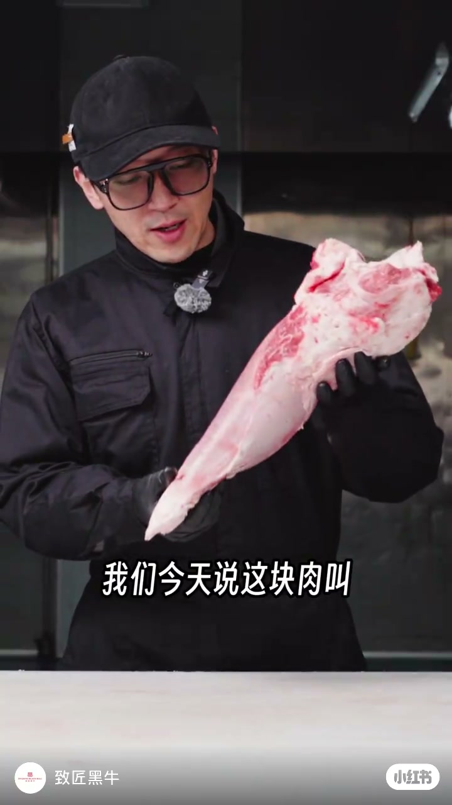
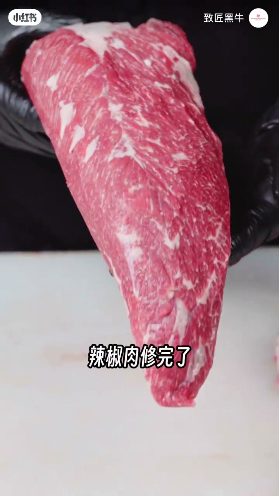
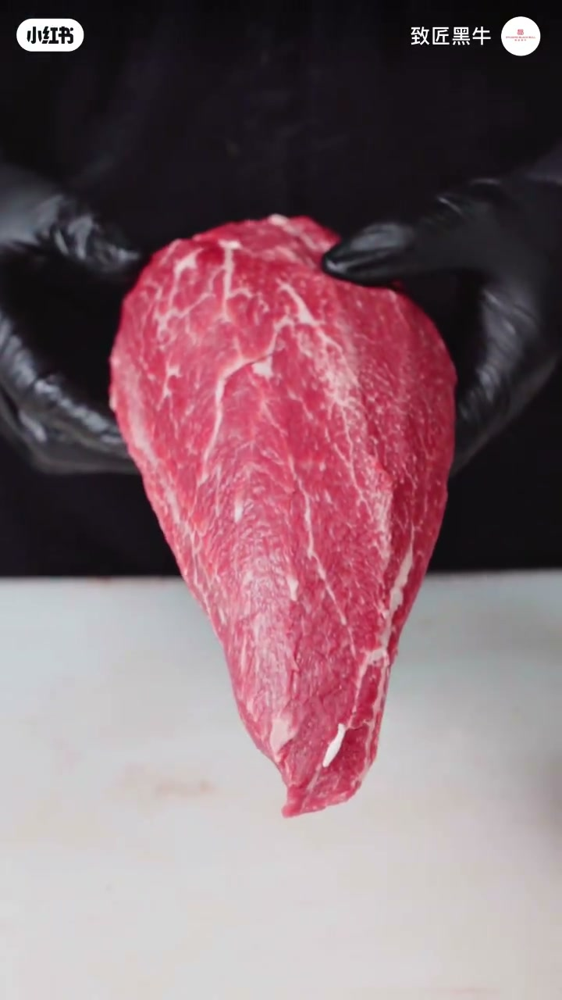
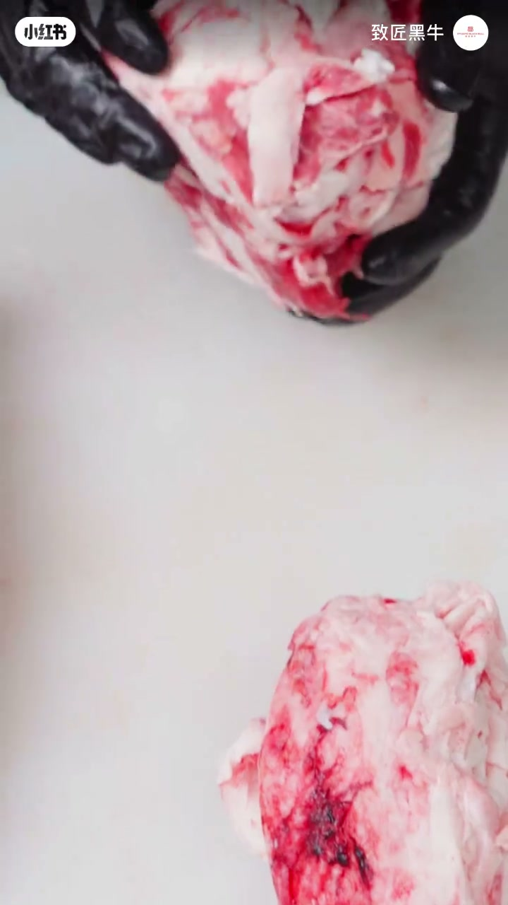
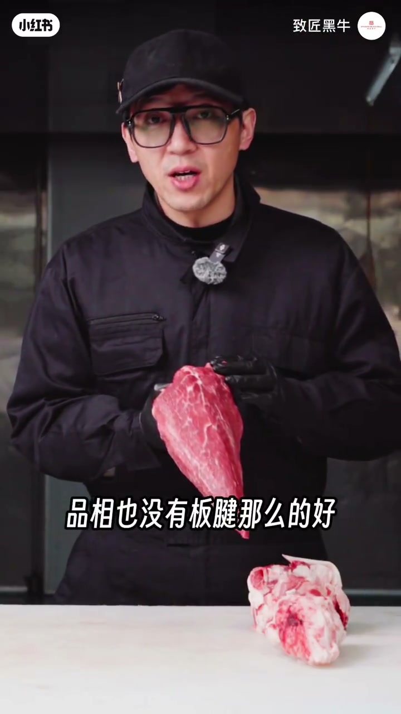

内容要点
致匠黑牛介绍前腿部位「辣椒肉」：精修后外形酷似大辣椒，肉质偏嫩，常被称作刺身肉。吃法以薄切烤肉、涮肉、刺身和厚切烤肉为主，较少当牛排；价格明显低于板键，却是家庭食用与和牛入门的务实选择。
知识结构
今日讲辣椒肉；修完后外形真像大辣椒，名字与形状高度吻合。
生吃很嫩故称刺身肉；常见薄切烤肉/涮肉、刺身、厚切烤肉，很少当牛排——当牛排口感偏硬。
外膘油脂与筋皮修下，雪花纹理漂亮，精修标准高。
前腿里品质不错但香度、嫩度、品相不如板键，价格低很多；家庭食用与和牛入门款很合适。
辣椒肉卖的是「形似+够嫩+够便宜」：别拿它硬刚板键的香度与品相，也别指望当厚切牛排；家庭薄切、涮、刺身更能发挥它的入门价值。
00:00-01:05这块肉为什么叫辣椒肉
作者黑衣黑帽、戴手套出镜，双手托起整块原料：「我们今天说这块肉叫辣椒肉。」中段切到精修完成的成品，外形收成细长的辣椒状，他笑称「这个名字和这个形状真的是非常的像，其实就是一个大辣椒」。命名几乎完全来自视觉联想。


01:05-01:25刺身肉的来由与吃法清单
口感上「生吃非常的嫩」，所以又有「刺身肉」的叫法。吃法很多：基本上是薄切烤肉、薄切涮肉、刺身、厚切烤肉；「很少有人拿它当牛排」，因为这个部位若按牛排吃，口感还是偏硬。选型时先想清楚你要的是涮烤薄片，还是厚切煎牛排。

01:25-02:06精修结果与板键比性价比
镜头展示分下来的肉、外膘油脂和修下的筋皮，强调精修标准高、雪花纹理漂亮。定位上，辣椒肉在前腿里属于「比较值得」的部位，口感、嫩度与香味都不错，但「主要是这个部位价格比较便宜」：和板键比，香度、嫩度、品相都不如，所以价格低很多。
收尾给家庭消费者一句实话：自己吃的话，这是非常不错的选择，也是和牛入门款比较好的肉。


完整转录（33段）
以下文本由 Whisper medium 模型自动转录，可能存在少量识别误差，已尽可能修正。
我们今天说这块肉叫辣椒肉
什么样子的
辣椒肉修完了
这个名字和这个形状真的是非常的像
其实就是一个大辣椒
这个肉啊 生吃肉非常的嫩
所以为什么管它叫刺身肉
这是一个原因
这个部位的吃法也有很多
基本上就是薄切烤肉
薄切涮肉
刺身 厚切烤肉
很少有人搭搭当牛排
因为这个部位的话
如果吃牛排口感还是偏硬的
精修的标准也是非常的高
雪花纹理也是非常的漂亮
这个是分下来的肉
这是外标的油脂
这只修下来一些筋皮
辣椒肉这个部位在前腿来说
属于比较质的一个部位
口感 嫩度 以及香味
其实都还是比较不错的
主要是这个部位价格它比较的便宜
因为如果它和板剑比的话
它没有板剑那么高的香度
也没有板剑那么大的嫩度
其次品相也没有板剑那么的好
所以价格要低于板剑很多
但是如果我们自己在家庭里面食用的话
这块肉是一个非常不错的选择
也是一个和牛入门款比较好的肉